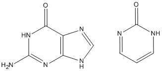

Adds hydrogen atoms to a data set to satisfy valence requirements. Most sites are neutralized, the exceptions being: (A) Metal atoms normally exist as ions, e.g., Na+, Ca+, and halogen atoms that are not covalently bonded, e.g. Cl- and F-, are represented as the appropriate ions. (B) Some organic species that normally exist in the ionized form, such as N-methyl pyridine, are hydrogenated so that the result is the conventional ionized moiety. Hydrogen atoms are added to all other species to produce the neutralized species. Pairs of residues that can exist as salt bridges sometimes form spontaneously when the positions of the hydrogen atoms are optimized.
The results are suitable for use in preparing a MOPAC data set. This keyword is intended for use with proteins only. It should work for non-proteins as well, but there is an increased probability that it will make mistakes, and for systems that cannot exist in aqueous media, such as LiCH3, there is an increased probability of failure. In a run to add hydrogen atoms, one or more sites can be ionized by using SITE. A useful option is to use SITE=(SALT); when present all likely salt bridges between residues would be created.
If any hydrogen atoms are present, they will be removed before ADD-H runs. When a PDB file is made, a set of checks is run to detect errors in the structure. By default, the sequence of atoms will be put into the standard PDB sequence. If this is not wanted, add NORESEQ. NORESEQ is also useful in the unlikely event that the ADD-H run reports an error in the residue recognition process.
Whether specific sites should be ionized or not is hard to answer. For simplicity, ADD-H produces either the completely neutral protein, or, if definite ions such as Ca2+, K+ or [CH3-NC5H5]+, are present, the minimally ionized form.
For the purposes of hydrogenation, most metal atoms are assumed to be completely ionic, i.e., they do not form bonds. This allows isolated oxygen atoms near to metal atoms to be converted into water, and not into hydroxide.
Sometimes, ADD-H makes mistakes. For example, both guanine and pyrimidine-2-one (see picture) have similar environments for the top left ring nitrogen atoms, but in guanine there is a hydrogen atom attached, while in pyrimidine-2-one that hydrogen atom is missing. This is a consequence of the positions of the two double bonds in the six-membered ring. That is, it is not a function of the nitrogen atom, nor of the carbon atom adjacent, but depends on the more distant atoms. Sometimes ADD-H makes mistakes with complicated structures like these, but for most PDB files, ADD-H works correctly. No errors were detected in validation tests for a set of proteins. If an example of an incorrect hydrogenation is found, please send details to openmopac(at)gmail.com
Starting with an un-modified PDB file, e.g. 1A1A.pdb. Edit a MOPAC data-set file to be named "1A1A ADD-H.mop" Use keywords "GEO_DAT="1A1A.pdb" SITE=(SALT) ADD-H NOOPT OPT-H HTML CHARGE=0 GRADIENTS MOZYME EPS=78.4" and a title-line describing the system, e.g., "PDB file 1A1A with hydrogen atoms added, but positions not optimized" If you know that sites in addition to salt-bridges are ionized, add these ionizations to the SITE command. If there are several PDB files to be hydrogenated, use the SETUP command to specify the hydrogenation keywords, e.g., SETUP="Add-H.txt" and have the SETUP file "Add-H.txt" consist of the single line SITE=(SALT) ADD-H NOOPT OPT-H HTML CHARGE=0 GRADIENTS MOZYME EPS=78.4. Then only two keywords for each data-set would be needed, e.g., "GEO_DAT="1A1A.pdb" SETUP="Add-H.txt"".
Run the data-set, i.e., run "1A1A ADD-H.mop". That will produce an output and an ARC file.
To optimize the positions of the hydrogen atoms, run the newly-created ARC file. All the keywords that were used in the previous job will be present in the ARC file, with the exception of the keywords that were specific to ADD-H, i.e., GEO_DAT="1A1A.pdb" SITE=(SALT) and ADD-H; these are automatically deleted. This leaves a set of keywords that can be used in a normal MOPAC job to optimize the positions of the hydrogen atoms, while leaving all other atoms fixed. Normally an ARC file would not be used as a MOPAC data-set, but in this case its use simplifies the hydrogenation process by eliminating one step. The system should be neutral, unless metal atoms are present. If MOZYME predicts that the system has a net charge, then examine the charged sites to check that the charges are correct. Elements of Groups IA and IIA are always charged. Other metals, e.g, Zn, Fe, Ni, etc., might be charged. If a metal atom is assigned a negative charge in this run, use keyword METAL to make it 100% ionic. This will not affect the run, but might make the charges generated by MOZYME look more reasonable.
A simple way to check the hydrogenation is to run the system using keywords CHARGES and HTML, and then examine the output. All the ionized sites will be listed in the lines under "Ion Atom No." If SITE=(SALT) is used, there might be a lot of salt bridges listed - residues involved in salt bridges can easily be identified by the short distance to a residue of the opposite sign. Ignore them. Focus on the remaining charged sites. If any look strange, examine the environment using a GUI. Keyword HTML produces a file that is easy to examine.
Another way to find faults in the hydrogenation is to run a single SCF calculation and look at the forces acting on the non-hydrogen atoms. Start with the ARC file from the previous job, and replace keywords "NOOPT OPT-H" with "1SCF INVERT", then save the edited file. Use a descriptive name such as "1A1A Opt-H 1SCF.mop" Atoms that might be wrongly hydrogenated will have large gradients, typically over 100 kcal·mol-1·Å-1. At this point, ignore and carboxylate groups - PDB analyses typically do not distinguish between the C=O and C-OH distances. Also, ignore large gradients in sulfate and phosphate groups. These are usually caused by errors in the PM7 method. Using a GUI (JSmol is ideal here), examine any atoms that have unexplained large gradients. Possibly one or more simple errors will be found where there are more or less hydrogen atoms attached to a heavy atom than expected. Add or delete hydrogen atoms as necessary, and re-run the "1A1A Opt-H 1SCF.mop" job.
See also Modeling Proteins, SITE, PDBOUT, NORESEQ, and Preparing a starting data set.